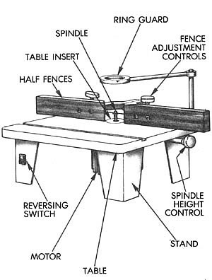
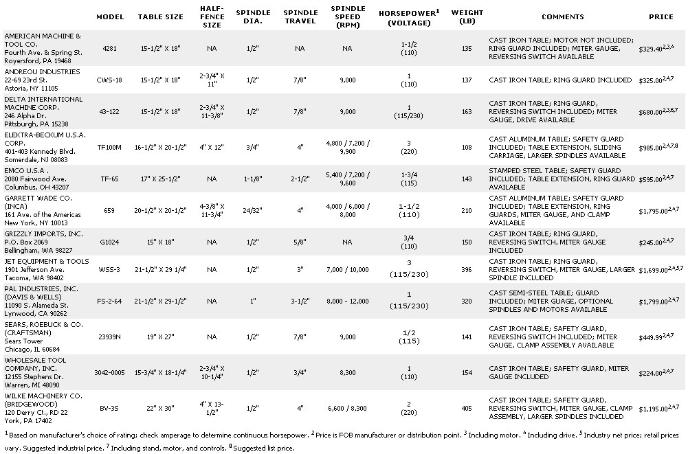

DESIGN YOUR DREAM WORKSHOP: PART VII
Admittedly, a wood shaper would be considered a luxury by most nonprofessional woodworkers. But if you're in the market for a quantity of molding, or anticipate making a lot of custom joints, or even trim picture frames, one of these versatile shapers will most likely pay for itself several times over.
A shaper cuts stock to a particular pattern or profile by employing a rapidly rotating multibladed cutter mounted to a vertical spindle. The spindle is designed so it can be raised or lowered in fractional increments to meet the work at a precise point; in addition, spacers can be used to position the cutter at different heights on the spindle.
The edge of the work is guided along a pair of independently adjustable fences which are positioned on either side of the cutter. As the stock passes the spinning blades, it's shaped to match the cutter's profile. Literally hundreds of profile designs are available to fashion anything from frame moldings to finger joints.
When shopping for a shaper, look for one with a table about 1-1/2' square or larger, with a removable insert around the spindle . . . and a slot for a miter gauge. As a rule, cast-iron construction is superior, but cast alloys are strong and lightweight as well. A particularly valuable accessory, if you'll be working with long boards, is a table extension. Likewise, a sliding carriage, mated to the tool's existing table, makes panel and quantity work a good deal simpler. Generally, shapers aren't manufactured as bench models, so be sure that the table height - as determined by the size of the stand that comes with the machine - will be comfortable for you.
Since the spindle is such an important part of the tool, pay some attention to its construction and detail. The standard diameter is 1/2"; European models use larger shafts, and heavier commercial shapers come with interchangeable spindles of different sizes. The range of the spindle's travel reflects convenience rather than necessity. Far more important is the precision with which the spindle is set within its housing. There should be no evident sideplay, especially when the spindle is at its full height. The shaft's vertical movement should be smooth and consistent, but kept in check with a lock control that's readily accessible to the operator. An accurate and readable scale, operating in conjunction with the spindle height control, is a plus when setting up your work, but you'll still have to rely on a test pass to be certain of its claim.
Even if you're just making an armchair analysis, you'll notice that some shapers have single-speed spindles while others offer a selection of spindle speeds. As a rule of thumb, the higher speeds are for smaller-diameter cutters, the common type used to make surface cuts for molding and trim. Slower spindle speeds are used with larger-diameter tool bits or with certain dado (groove) and joint cutters. Since horsepower requirements increase as RPM decreases, you'll need to give some consideration to the kind of work you'll be tackling before you settle upon your choice of equipment. Be aware, too, that horsepower assessment isn't necessarily consistent among every manufacturer: Some quote peak, or developed, horsepower, which only applies to short-term use. Look for a continuous, or rated, horsepower figure, or check the motor's amperage rating (10 to 13 amps equals roughly 1 horsepower at 110 volts).
In case you're wondering why shapers are equipped with reversing switches, it's to make the cutting bits more useful. Rather than keeping a large number of cutters on hand, it's often possible to merely flip the bit upside down on the spindle and use a combination of spacers or cutter collars to create a desired profile; since the bits can cut cleanly in only one direction, there has to be some provision for reversing the direction of rotation.
Before you make a final decision, investigate the safety aspects of, and availability of accessories for, the machines in your price range. An overhead ring guard is a standard piece of safety equipment with several models and can be ordered for most others. In any case, some type of cutter guard should be mandatory . . . and the adjustment controls for the two fence halves should be convenient, yet located away from the vicinity of the blades. The chance of accidents can be greatly reduced through the use of work clamps or guides available as options on most machines. Even a miter gauge is a good investment, because it'll help you control your work at a minimum of expense. And finally, check into one of the most valuable "accessories" of all: service and parts accessibility. Even well-built equipment eventually breaks down, and it's a shame to have to replace an entire machine for lack of one impossible-to-locate part!
|
 |
 |
|